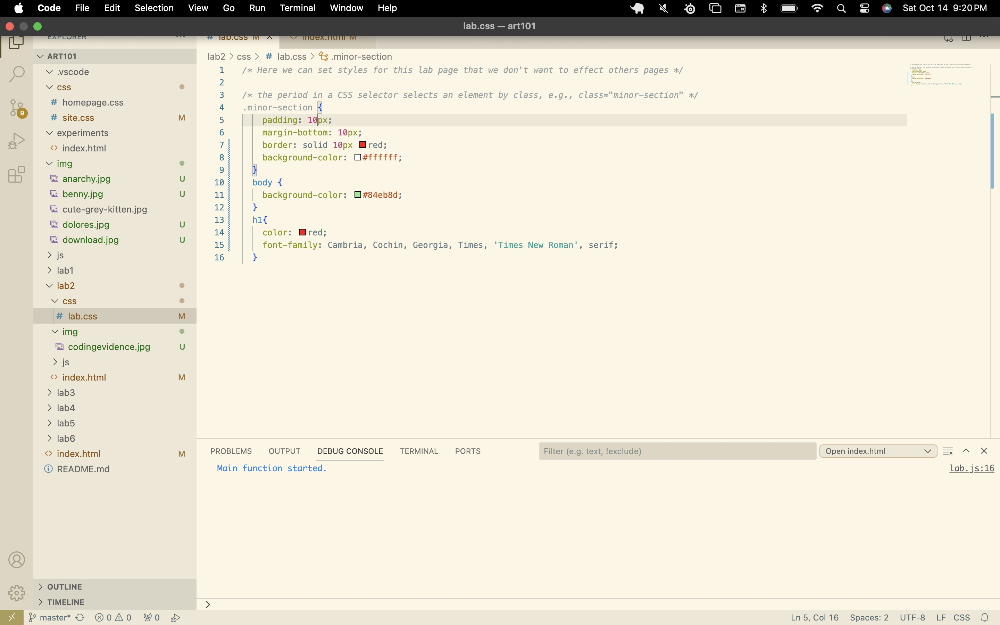
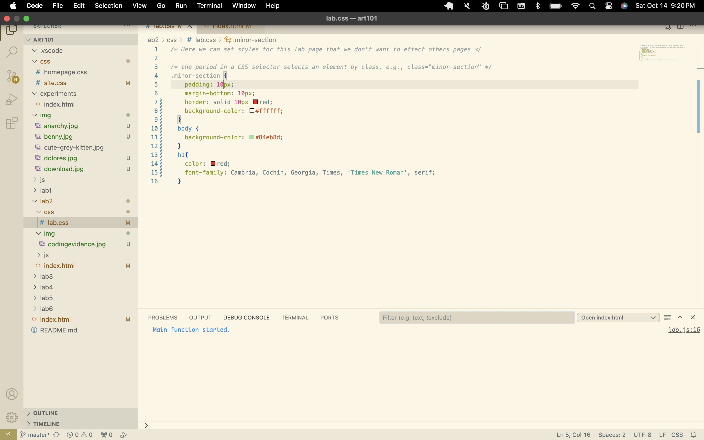

Hello World
My name is Oscar Aguirre, I am a transfer here at UCSC. I am studying studio art because I enjoy making art. I am currently teaching myself to tattoo and have even organized a small community of people who are willing to tattoo each other here at UCSC. I have some coding experience. My friends are computer science majors and gamers so I found myself curious about programming. I taught myself some python which led down a rabbit hole where I changed my major and took some java and c++ classes. I enjoyed it because it was like a challenging logic puzzle, but constantly coding and doing math made me depressed. I think this class will reignite my passion for coding because it allows me to combine art and technology. My partners name is Yihan Wang. She is an AGPM major which I think is super cool.
Challenge
Create a basic HTML + CSS file structure, edit it, view it in my browser, and inspect it.
Problems
I wanted to resize a screenshot I took as evidence of my work in order for it to display in proportion to the rest of the screen, so I looked up a solution and implemented it.
I'm also testing line breaks!
I found that the body's background color was inheritted by the overall css file. Specifying the color in lab 2's css file fixed that issue.
Reflection
I found that working through whatever problems I encountered while playing with the code helped me understand how to manipulate my webpage in new ways.
I really do enjoy playing with HTML and CSS because it allows me to visualize the results of my coding.
Results
 
